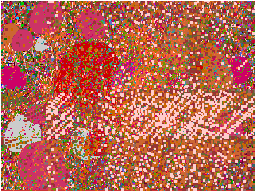
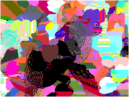
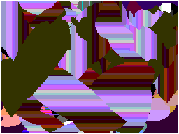
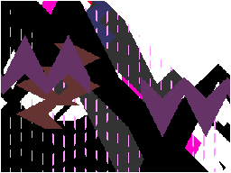
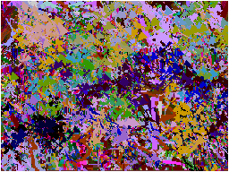
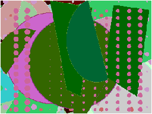
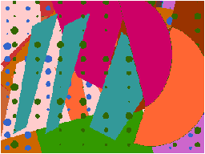
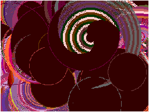
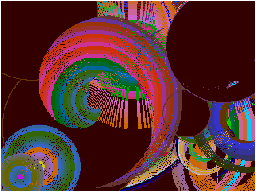
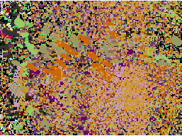

On The Leading Edge
Themes in Kinetic Computer Painting

"Isis"
emerges from observation of the grouping of plants. Plants grow most
often in groups as a result of the interaction of seeds with the wind, soil,
rocks, and rain, etc. Thus it started with a small square as a seed then
certain algorithms were applied to it to distribute it.


"Brass Women"
was inspired by discussion of the members of the group about
their strong admiration of the power of some Black and Latino women. It is
therefore a homage to Latino and Black American women who speak loudly in
defense of liberation and equality.


"City"
is based on the passing of a day in a large city like New York. It
begins before dawn when people are preparing to take the train to work. It
dwells for a time on the great pleasure of taking a break. This part was
inspired by the joyful congregation of office workers with their lunches in
down-town parks. The piece ends with evening rush hour and transportation
out of the city.


"Branching"
is inspired by the movement of aggregations of small things.
How tree leaves are organized and how they respond to the wind is one example
of the source of this piece. Another is the movement of crowds of people
in a large train station.


"Rhythms"
has its basis in various levels of rhythms evoked by our human
body. That varies from the rhythm of walking, heart beating, talking,
running, sleeping, and others. It is a piece where musicians and painting
all move at a vigorous level.


"Yafa"
is the city of my childhood. It is always with me and in all my art. My visual
memory is brimful of its sweetness. I remember the beautiful women with the
colorfully transparent scarves, elegantly splashed over their faces as veils,
juxtaposed with gardens and flowers and strolls with my sister in a baby carriage.
In our Palestine of the late thirties there was a sense of futurism and
optimism. This has been forgotten under the brutality of Israeli occupation. This
work combines my love and my anger to relay the incredible beauty of Yafa which
I know for certain will live yet again.

"Rain"
has its basis also in things that move as a whole group. Not
only rain but also snow and dust and flying leaves as well as pebbles in
water all have had a part in influencing this work.
CLICK HERE to make comments.
Copyright, Samia A. Halaby, 1998, All rights reserved. To request permission to reproduce
any part of these words or pictures CLICK HERE.
Select from the following menu representing the entire studio:
Return to the main Kinetic Page.
Return to the very beginning FRONT PAGE of the studio.
Menu of the entire studio
![[Art on the Net]](/images/artnet_button.gif)